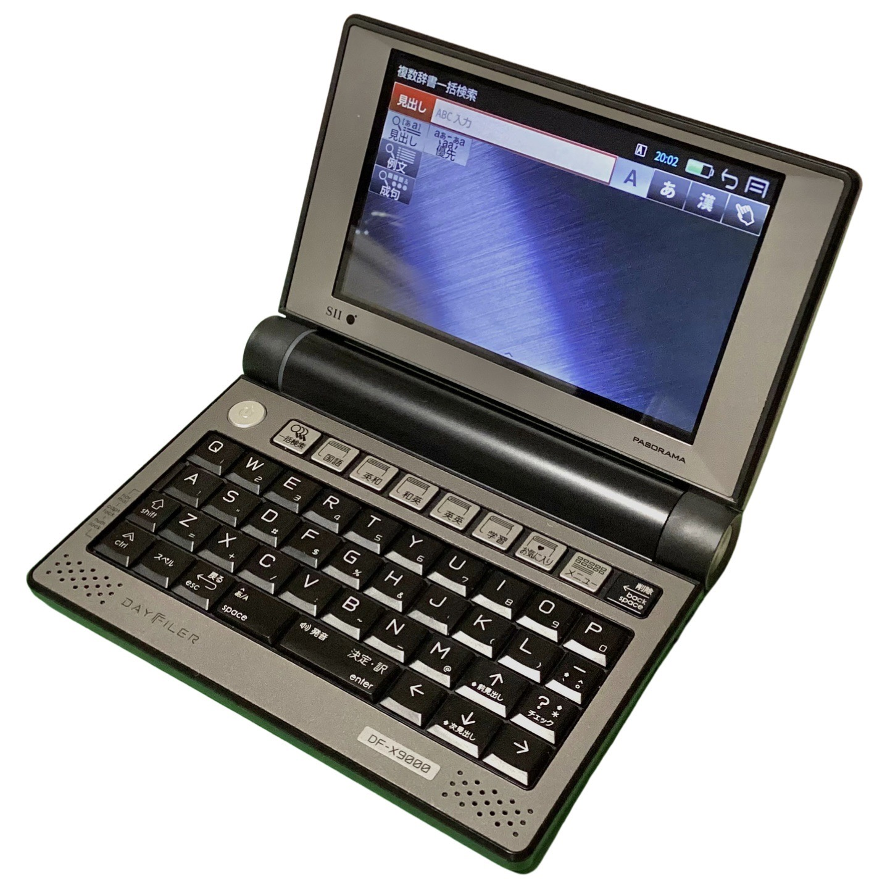

少し、投稿の間隔が空きました。
今回は新たに購入した中古のPDA電子辞書です。
セイコーインスツル(SII / Seiko Instruments Inc.)が2013年に発売した(当時)フラッグシップ、DF-X9000です。
DAYFILERシリーズ、もっと言うならSII製の電子辞書は、語学に強いらしく、実際にコンテンツ量は異常なまでに多いと感じます。
本機種は「ビジネスマン・エンジニア向け」との記載があり、私が本モデルに選んだのも理化学辞典(岩波)が読み込まれているからです。
とりあえず、製品としての全体像が以下の通りです。

まぁ、何というか。カッコ良いですよね。
たかが電子辞書のくせに特別なロマンを感じる製品です。
先ほどは述べませんでしたが、システムはAndroid 4.0.4(Ice Cream Sandwich | API Lv.15)がベースのOSになっています。
それもあってか、画面は静電容量方式タッチパネルかつWVGA(Wide VGA / 480×800)の高画質ディスプレイです。
ちゃっかり2点タッチに対応しており、ピンチイン・ピンチアウトで拡大・縮小も可能です。
上記のこともあって、以下の画像のようなこともできてしまいます。
そう、Android向けドキュメントライター、7notes with Mazec-Tを利用できます。
リッチテキストっぽいものが作れます。
簡易メモ程度なら大丈夫ですが、結構ラグくなるので注意しましょう。
こういう異質な機能も良いですが、ここからは「電子辞書として」レビューします。
まず、非常に使いやすいです。
私自身、CASIO XD-SX4900という、高校生向けのその中でも少し高機能なモデルを所有しています。
そちらでは、私が調べたいような(どちらかといえば)専門的な内容・語句はなかなかヒットしません。
しかし、DF-X9000なら一発でヒットします。
やはり、情報量は大切ですからこれは大きなメリットです。
この点において、「ビジネスマン向けで良かった」と感じています。
ビジネスマン向けモデルって、大概は英語系辞書のコンテンツが豊富で、SIIは特にその傾向が強いため、本当にヒットしない検索がなくて感動しました。
ただ、欠点もあるのでピヨピヨとはいえレビュワーとして述べておこうと思います。
まず、電池が貧弱であることです。
本シリーズの電子辞書はUSB電源に加えてリチウムイオン二次電池を搭載しています。
しかしその電池が一瞬で蒸発します。
これは中古だから、というのではなくシリーズ自体の持病です。
あのアテにならない公称時間ですら11時間なので、実際はもっと短くなります。
もう1つがキーの打ち漏らしが生じること。
CASIO機の感覚でカチャカチャっと打つと打ち漏らしが発生してしまいます。
これに関しては、この年代の電子辞書全般に言えることなので、しっかりと押し込むことを心がけることが必要そうです。
まぁ、これは慣れれば大丈夫かと思います。
2025.7.6追記
2014年に配布された新OSをインストールしたところ、この問題は解決されていました。
キーボードを打つ速度が多少速くても、後からついてくるような感じで確実に入力されます。
また、ドキュメントライターなどの外部ソフトからでも上部の辞書キーで1発復帰できるようになりました。
マジで欠点が電池しかないです。
2025年現在、すでにシリーズ廃盤、そしてSIIの電子辞書事業の撤退から10年が経ちます。
それでも未だにAmazonで新品・中古品が売られ続けるのには理由があるのだと思います。
専門的な内容を求めている方は、ぜひ検討してみてはどうでしょうか。